AWS(Amazon Web Services)란?
글로벌 1위 클라우드 플랫폼입니다. 안정성과 확장성을 바탕으로 ERP, AI, 데이터 분석 등 다양한 혁신을 지원합니다. 기업은 신속하고 안전한 클라우드 전환으로 경쟁 우위를 확보할 수 있습니다.
웅진의 AWS History
웅진은 AWS의 SAP Competency를 보유한 컨설팅 파트너이자 SAP의 Gold파트너로 클라우드 서비스 컨설팅, 구축, 운영, 관리까지 클라우드 전 영역을 체계적이고 전문적으로 지원합니다.
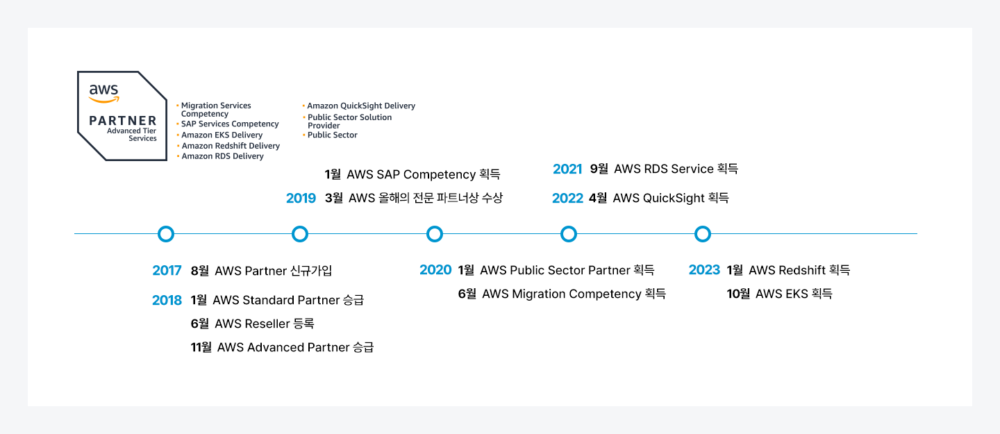
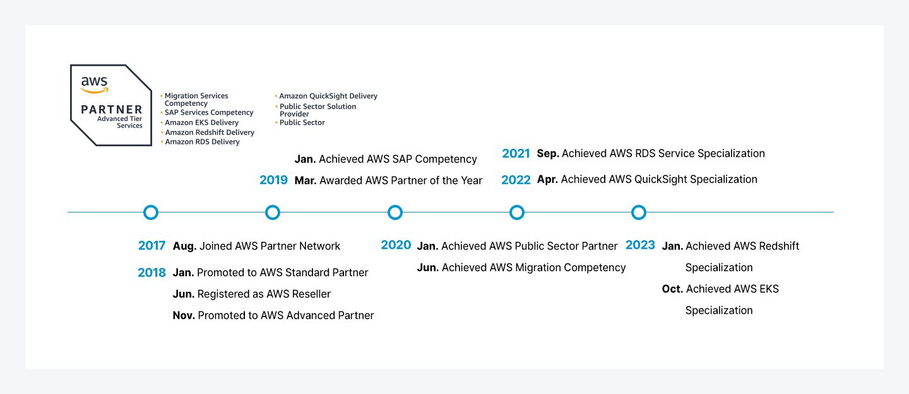
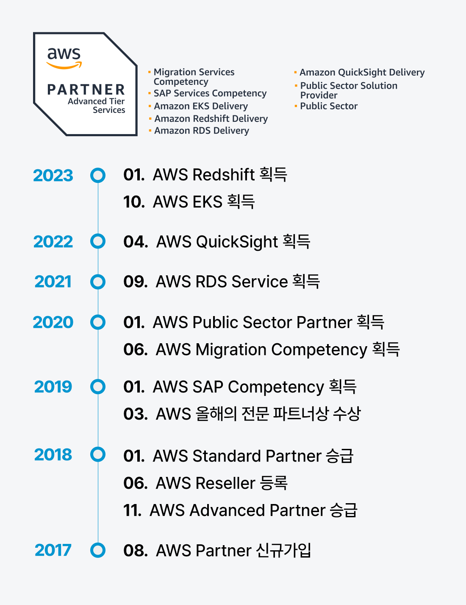
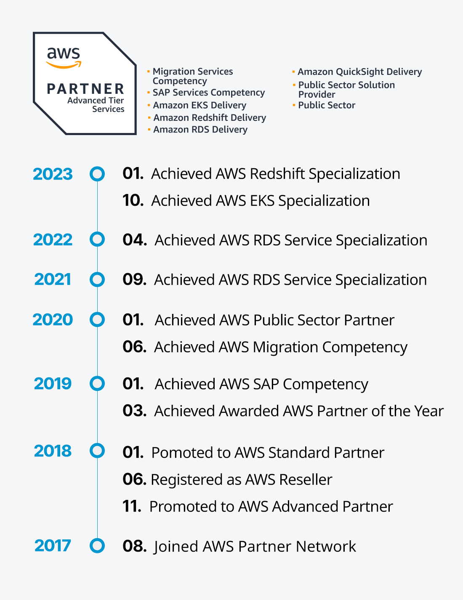
Total Migration & Consulting
웅진은 AWS로부터 마이그레이션 전문성에 대한 인증을 획득했으며, 고객이 보유한 다양한 규모의 복합적인 워크로드를 AWS로 이관한 경험이 풍부합니다. 웅진의 AWS 전문 인력은 체계화된 방법론을 통해 고객의 IT환경을 분석하고 고객에게 최적화된 클라우드 환경을 제안합니다.
체계적인 서비스 진단 및 분석
- 고객 니즈를 명확하게 파악해 To-be에 대한 전략적인 범위 산정 및 전략 제시
- 최적의 클라우드 환경을 통한 안정적인 분석 제공
고객 서비스 중심의 아키텍처 설계
- 비즈니스 목표에 적합한 클라우드 아키텍처 설계
- 서비스별 다양한 관점에서 UI 및 데이터 최적화
신속한 마이그레이션 운영
- 최적의 인프라 운영 및 체계적인 클라우드 마이그레이션 환경 구성
- 안정적인 네트워크 속도 및 인프라 환경 구축
SAP on AWS
AWS는 SAP워크로드를 위한 가장 안전하고 안정적인 클라우드 플랫폼입니다. 웅진은 AWS상에서의 SAP S/4HANA, Business One, 운영 및 PoC 검증 등의 경험을 통해 고객이 안정적으로 AWS에 안착하여 고객은 핵심역량에 집중 가능하도록 합니다.
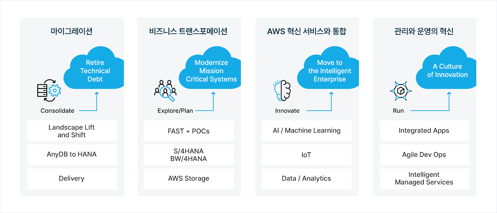
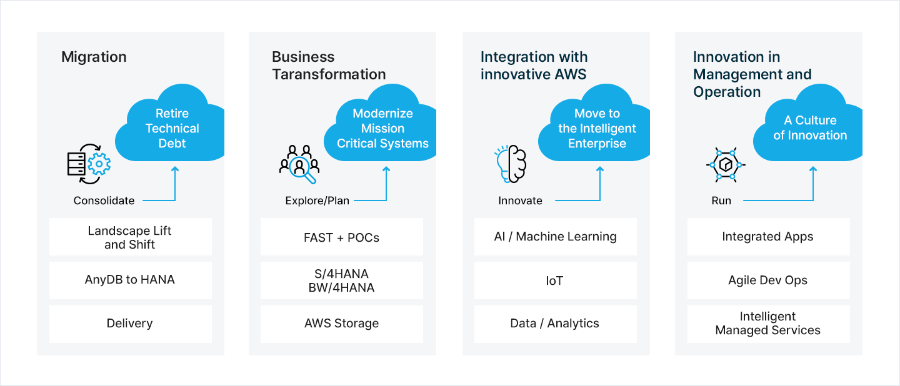
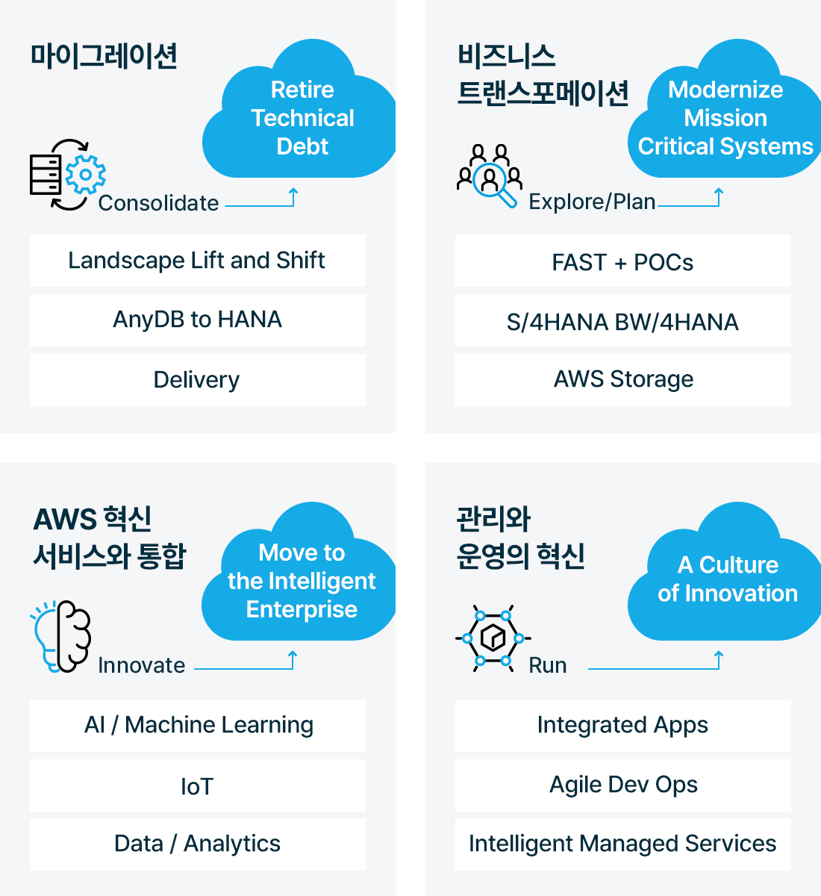
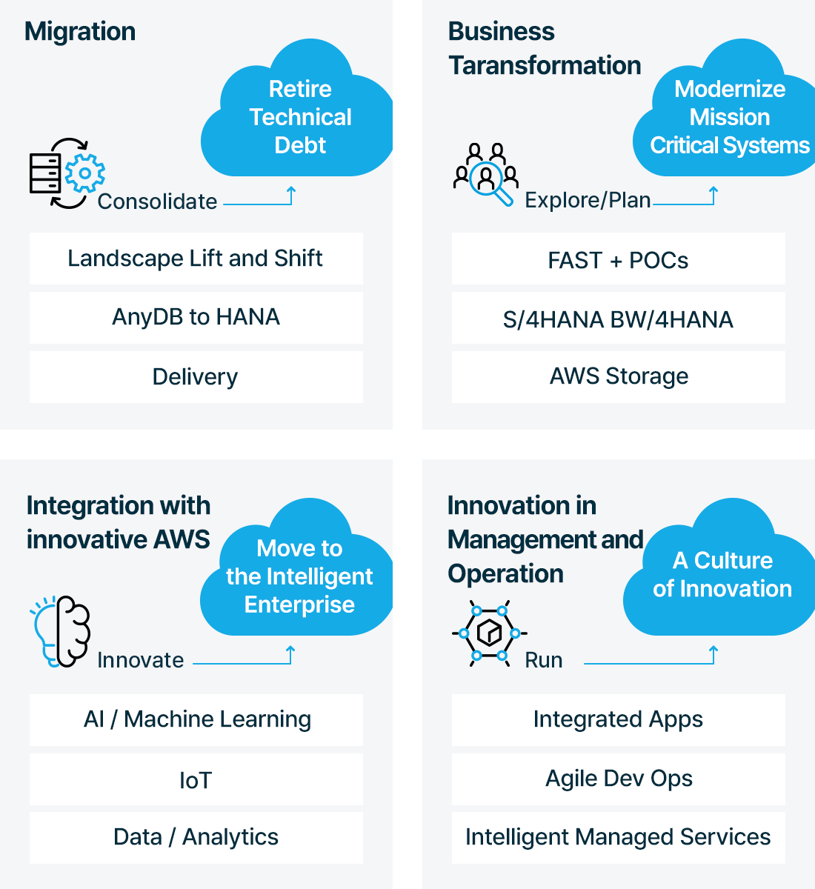
Why SAP on AWS?
- 빠른 설치 및 구성
- 하드웨어의 주기적인 교체 불필요
- 실 환경 성능 테스트 수행
- 수월한 시스템 복구/운영시스템 복제/백업 관리
왜 SAP는 AWS에서 보다 혁신적인가?
- 자유로운 인프라 구성 가능
- 낮은 실패 비용
- AWS의 완전 관리형 서비스
- 서버없는 서비스, 혁신 서비스
클라우드 모니터링 솔루션 Watchcon
웅진은 AWS로부터 마이그레이션 전문성에 대한 인증을 획득했으며, 고객이 보유한 다양한 규모의 복합적인 워크로드를 AWS로 이관한 경험이 풍부합니다. 웅진의 AWS 전문 인력은 체계화된 방법론을 통해 고객의 IT환경을 분석하고 고객에게 최적화된 클라우드 환경을 제안합니다.
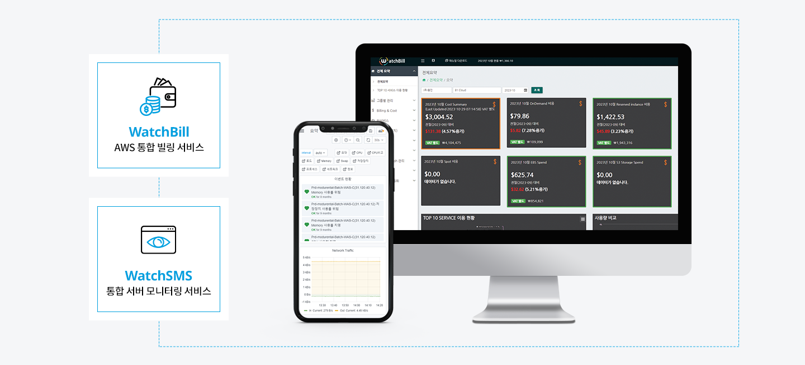
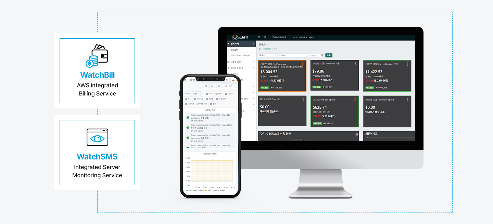
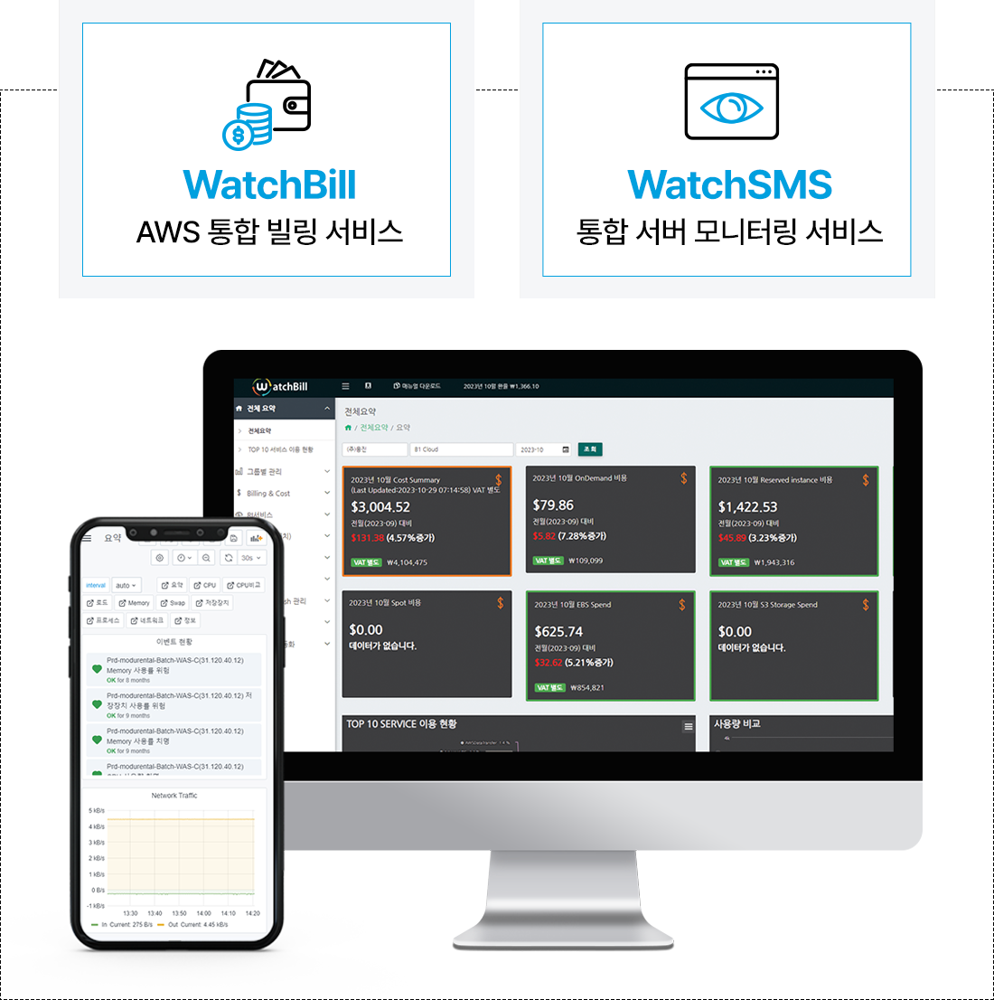
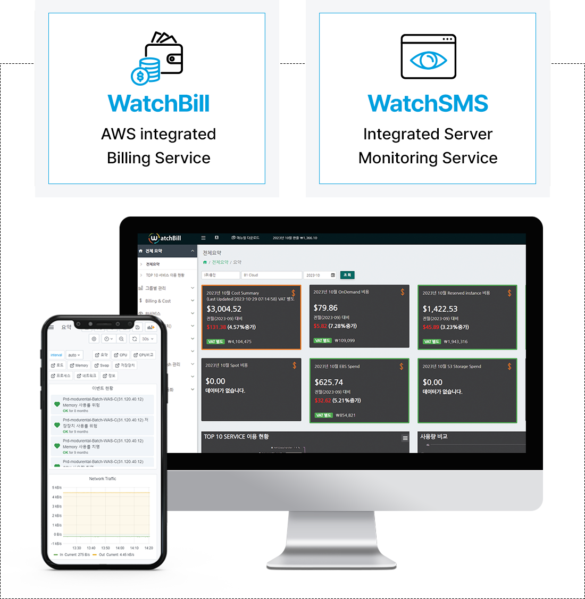
SIOS H/A Cloud Solution (SIOS Protection Suite for SAP HA and DR)
SIOS사의 SAP용 이중화 솔루션 및 데이터 복제 솔루션은 SAP on AWS를 위한 최상의 솔루션입니다. SAP 서버의 데이터베이스, 하드웨어(서버, 네트워크, 스토리지), CI(ASCS, ERS)등 모든 리소스에 대한 장애를 24x7 감시하여 무중단 시스템 운영을 지원합니다. SPS는 SAP사로부터 인증되었으며, AWS에서 검증된 솔루션입니다.
기업을 위한 클라우드센터
웅진은 기업용 클라우드서비스를 위해 클라우드센터를 운영하고 있습니다. 웅진클라우드센터는 전문인력을 통해 업무를 위해 필요한 컨설팅, 구축, 운영, 관리까지 전 영역을 체계적이고 전문적으로 지원합니다. 글로벌 리더 제품을 지금 바로 만나보세요. 고객의 AWS 인프라와 클라우드 기반의 시스템을 체계적으로 운영 및 관리하는 매니지드 서비스를 제공하고 있습니다. 웅진의 클라우드 전문인력을 통해 체계적인 서비스를 만나보세요!
Cloud Managed Service